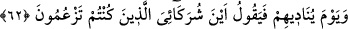

62. O gün Allah onları çağırarak: Benim ortaklarım olduklarını iddiâ ettikleriniz
hani nerede? diyecektir.
“O gün Allah onları çağırarak:”
“ (gün)” kelimesi, mukadder bir “ (hatırla)” fiiliyle mansubtur. Kasdedilen
(gün)” kelimesi, mukadder bir “ (hatırla)” fiiliyle mansubtur. Kasdedilen
kıyamet günüdür. “ (onlara seslenir)” deki “ (onlar)” zamiri, kâfirlere râcidir. “ nidânın tefsiridir.
Yani, Ey Muhammed! O günü hatırla ki, Rabbin gazaba gelerek senin kavmine:“Benim
ortaklarım olduklarını iddiâ ettikleriniz hani nerede? diyecektir.” Bana ibâdet eder
gibi kendilerine ibâdet ettiğiniz ortaklarım nerede?
Burada, kelâmın delâletine binâen iki mefûl hazfedilmiştir.
Keş’fü’l-esrâr’da der ki: Onlara bu şekilde soru sormak, onlar için bir azap çeşididir.
Çünkü onların karşılık verecek bir cevapları yoktur; bu ifâde ve üslupta onları rezîl-ü
rüsvay etmek ve kendilerinin cehâletlerini itirafları vardır.
63. (O gün) aleyhlerine söz (hüküm) gerçekleşmiş olanlar: Rabbimiz! Şunlar
azdırdığımız kimselerdir. Biz nasıl azmışsak onları da öylece azdırdık (yoksa onları
zorlayan bir gücümüz yoktu. Onların suçlarından) berî olduğumuzu sana
arzederiz. Zaten onlar aslında bize tapmıyorlardı (kendi arzularına tapıyorlardı),
derler.
“(O gün) aleyhlerine söz (hüküm) gerçekleşmiş olanlar:”
“ (o dedi)” cümlesi, başlangıç cümlesidir. Soruyu anlatmaya ve hikaye etmeye
mebnîdir. Sanki denilmiştir ki: “Bu durumda onlardan ne sâdır oldu?” Bunun üzerine
denildi ki: Ezelde cehennem ehlinden olmaları ve rahmetten kovulmaları sebebiyle azâb
sözü üzerlerine hak olanlar dedi ki…
Şu âyet de bu mânâya delâlet etmektedir: “Biz dileseydik, elbette herkese hidâyetini
verirdik, (herkesi doğru ola getirirdik). Fakat “Mutlaka cehennemi, cinlerden ve
insanlardan bir kısmıyla tamamen dolduracağım!” diye benden kesin söz
çıkmıştır.” (es-Secde, 32/13) Nitekim et-Te’vîlâtü’n-Necmiyye’de de bu şekilde
kaydedilmiştir.